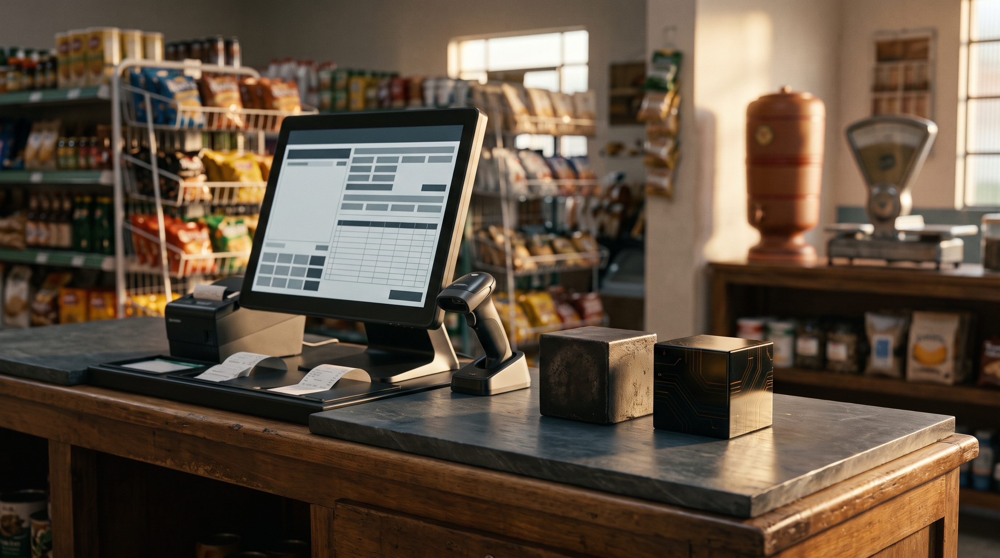

A Passagem do Bastão: O que o 8 de Novembro Ensinou à Engenharia do CaraCore PDV
O tempo corre veloz no relógio da estação,
o comércio pede ordem, certeza e precisão.
A linha três descansou com seu dever cumprido,
nenhum centavo de venda no caminho foi perdido.
Entrou a quatro em solo, serena e soberana,
gravando no arquivo local a lida da semana.
Quem bipa o pão no balcão não quer saber de ilusão:
quer código que não trave e honre o chão do sertão.
O peso de uma data gravada em pedra
No desenvolvimento de sistemas voltados ao varejo de balcão, cronogramas frequentemente oscilam entre a promessa comercial vazia e o adiamento indefinido. Quando cravamos em nossa governança que o dia 8 de novembro de 2026 marcaria simultaneamente o encerramento da manutenção oficial da série histórica v3.2.12-Free e a entrada em solo do CaraCore PDV v4.0.0 (General Availability), sabíamos que aquela data não aceitaria concessões. Não era um anúncio de intenções; era um compromisso de custódia com milhares de postos de trabalho espalhados pelos 5.500 municípios brasileiros.
Olhando hoje em retrospectiva atemporal, aquele dia não simbolizou apenas a substituição de um instalador por outro. Ele consagrou uma filosofia de engenharia que recusa os modismos efêmeros da tecnologia: a certeza de que o caixa de um pequeno comércio deve ser um bastião de soberania operacional, imune à instabilidade de conexões externas e leal à integridade absoluta do dado gravado em disco.
A despedida honrosa da v3.2.12 e a regra de ouro da migração
Sistemas maduros não devem ser abandonados às pressas, nem empurrados para a obsolescência forçada. A versão 3.2.12 cumpriu com bravura o seu papel: entregou estabilidade a milhares de comerciantes que precisavam de um controle de vendas honesto, sem mensalidades abusivas e sem amarras contratuais. Mas todo ciclo de engenharia chega ao ponto em que manter código legado acumulado torna-se um desserviço à segurança do usuário.
A transição de 8 de novembro obedeceu ao que chamamos na Cara Core de Regra de Ouro da Continuidade: nenhum lojista fica para trás e nenhuma venda passada é violada. O motor de migração da v4.0.0 foi calibrado para ler a base de dados histórica (migrações 047 até 052) e promover o esquema silenciosamente para a nova estrutura, sem exigir conhecimentos técnicos do operador. O lojista que abriu a v4 pela primeira vez encontrou seu saldo, seus clientes e cada item de estoque exatamente onde deveriam estar. Respeitar o passado do comerciante é o primeiro mandamento de quem constrói software para durar décadas.

Os alicerces da Borda Soberana na v4
O que fez da v4.0.0 um salto arquitetural irrevogável foi a consolidação de escolhas técnicas que hoje parecem óbvias, mas que exigiram imensa coragem contra o consenso raso da indústria:
- Java 25 embutido e empacotamento autocontido: Entregar um runtime de 176 MB que não depende de Java pré-instalado na máquina, de permissões de administrador complexas ou de configurações obscuras de variáveis de ambiente. Extrair e rodar.
- SQLite local em modo WAL (Write-Ahead Logging): Em vez de submeter o caixa a bancos relacionais pesados que consomem memória desnecessária ou forçar chamadas de rede para a nuvem a cada bip do scanner, os dados repousam no arquivo local
./data/caracore-pdv.db. Concorrência atômica, leituras ultrarrápidas e gravações blindadas contra quedas repentinas de energia. - A vitória do HTML-First com Launcher no Edge: Rejeitamos o caminho fácil de empacotar um navegador inteiro com frameworks pesados de JavaScript que transformam um simples fechamento de caixa em lentidão. O launcher no Edge nativo consome fração mínima de recursos e entrega resposta instantânea de interface.
A antecipação da Reforma Tributária: IBS e CBS no balcão
Enquanto grande parte do ecossistema de software fiscal brasileiro ainda debatia em comissões teóricas como modelar a transição tributária, o CaraCore PDV v4 entrou em solo com a projeção de IBS e CBS calculada dinamicamente item a item. E fez isso sem impor burocracia desnecessária ao operador de caixa.
A cada produto registrado pelo leitor de código de barras, um fragmento leve gerado pelo template Qute/HTMX recalcula em microssegundos os subtotais e a carga estimada dos novos tributos no rodapé da venda. Não há recarregamento de página, não há atraso perceptual entre o bipe e a exibição do total. O comerciante de bairro passou a visualizar o futuro tributário do país em seu próprio balcão, com transparência e clareza absoluta, antes mesmo da vigência obrigatória.
- O teste que audita a promessa (A Sonda de Promessas): Nunca confie apenas na palavra da equipe de produto. O script
sonda_promessas_v4.pymediu 21 alegações do manual e da vitrine diretamente contra os binários compilados (20 aprovadas, 0 reprovadas), eliminando discrepâncias antes do primeiro download público. - O fim do falso teste sintético: Abandonar suítes que rodam sobre bancos voláteis em memória (
drop-and-create). Quem mascara o schema real esconde bugs de tipagem (como datas salvas como INTEGER em colunas TEXT) que só explodiriam no computador do cliente. - A cerimônia criptográfica da custódia: Pacotes de produção devem carregar assinatura dupla em chaves Ed25519 independentes (
pdv-release-2026-aepdv-release-2026-b), com chaves privadas decifradas unicamente em memória e integridade verificada antes da distribuição. - Sobriedade diante do pânico de segurança: Rejeitar slogans de marketing que prometem "zero vulnerabilidades". Fazer triagem honesta de dependências (OSV) byte a byte, tratando riscos reais sem criar falsas ilusões.
O chão de fábrica e o valor do software honesto
O que nos ensinou o dia 8 de novembro de 2026, e que permanece tão vivo e atual em agosto de 2027, é que a engenharia de software ganha dignidade quando se recusa a ser efêmera. Em um tempo saturado de interfaces descartáveis e serviços em nuvem que cobram pedágio a cada respiração do pequeno empreendedor, construir uma ferramenta de caixa sólida, silenciosa e autossuficiente é um ato de respeito ao trabalho alheio.
A linha v3.2.12 cumpriu sua jornada com honra; a v4.0.0 assumiu o posto com o vigor da nova arquitetura e abriu caminho para os passos seguintes de integração responsável e desacoplada. No final das contas, quando as luzes da loja se apagam e o comerciante fecha o caixa no fim do expediente, o que importa não é a linguagem da moda ou o jargão do momento: é a certeza de que o dinheiro bateu, o relatório foi emitido e os dados permanecem em segurança sob o seu próprio teto.
Hashtags
Contato e Links
- Loja do CaraCore PDV: pdv.caracore.com.br
- Empresa: Cara Core Informática
- E-mail: suporte@caracore.com.br
- LinkedIn: Cara Core Informática
Conheça a arquitetura offline-first do CaraCore PDV e opere com independência total.
Conhecer o CaraCore PDV v4
Artigo publicado em 5 de agosto de 2027
© 2027 Cara Core Informática. Todos os direitos reservados.